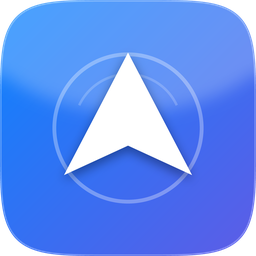
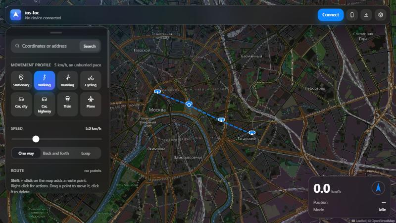
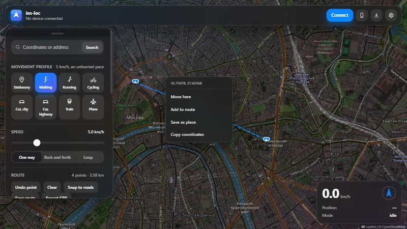
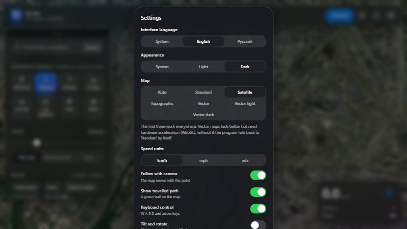

Подмена геопозиции на iPhone с компьютера — по кабелю, с картой.
Поставить айфону любое местоположение или «провезти» его по маршруту: пешком, на машине, поездом или самолётом. Работает на штатном механизме Apple — без джейлбрейка, патчей и профилей конфигурации.
Fake GPS for iPhone, driven from Windows over the cable.
Set any location, or travel a route at a believable pace. Built on Apple's own developer services — no jailbreak, no patching, no configuration profiles.

Фейк GPS для айфона, управляемый из Windows.
Эмуляция местоположения идёт тем же механизмом, что и Simulate Location
в Xcode — через службу com.apple.instruments.server.services.LocationSimulation
и usbmuxd, транспорт, которым уже пользуются Finder и iTunes. Это значит: ничего
в телефоне не ломается, джейлбрейк не нужен, профили конфигурации не ставятся.
Клик по карте — и айфон считает, что он там. Без режимов и переключателей. Маркер можно просто перетащить мышью.
Shift + клик строит путь. Устройство едет по нему с разгоном и торможением, а не телепортируется скачками.
На месте, пешком, бег, велосипед, авто по городу, трасса, поезд, самолёт. У каждого своя динамика и дрожание GPS.
Загрузить готовый трек или выгрузить нарисованный маршрут. Поддерживается прокладка по дорогам.
Стандартная, спутник, топографическая и две векторные. Если векторная не поднимается — программа сама переключается на обычную.
Работает по Wi-Fi, а панель управления открывается прямо на телефоне по QR-коду, за кодом доступа.
| Что | Зачем |
|---|---|
| Windows 10 или 11 | проверено на Windows 10 Pro 19045 |
| Apple Devices или iTunes | обязательно — драйвер, без него Windows не видит айфон |
| iPhone с iOS 13+ | iOS 17 и новее подключаются через туннель, он поднимается сам |
| Кабель | подмена идёт по нему; потом можно перейти на Wi-Fi |

| Действие | Как |
|---|---|
| Переместить устройство | клик по карте или перетащить маркер |
| Добавить точку маршрута | Shift + клик |
| Исправить точку | потянуть мышью; клик по ней — удалить |
| Меню действий | правый клик по карте |
| Сменить профиль | клик или клавиши 1–8 |
| Ручное управление | W A S D или стрелки, Shift — быстрее |
| Пауза | пробел |
Подключите айфон проводом и один раз выполните команду — дальше кабель не нужен, пока телефон и компьютер в одной сети Wi-Fi:
ios-loc.exe wifiПанель открывается в браузере самого телефона по QR-коду. Доступ закрыт кодом, который создаётся заново при каждом запуске:
ios-loc.exe ui --lan
Честно, чтобы не было лишних ожиданий:
Проект под лицензией GPL-3.0: исходники открыты, их можно читать, изменять и распространять. Внутри — движок движения с реалистичным разгоном, 58 тестов и проверка целостности сборки.
Fake GPS for iPhone, driven from a Windows PC.
Location simulation goes through the same mechanism as Xcode's
Simulate Location — the
com.apple.instruments.server.services.LocationSimulation service over
usbmuxd, the transport Finder and iTunes already use. Nothing on the phone is
modified: no jailbreak, no configuration profiles.
Click the map and the iPhone believes it is there. No modes to toggle — the marker can simply be dragged.
Shift-click builds a path. The device moves along it with acceleration and braking rather than jumping between points.
Stationary, walking, running, cycling, city driving, highway, train, plane — each with its own dynamics and GPS scatter.
Import a recorded track or export the route you drew. Road snapping included.
Standard, satellite, topographic and two vector styles, with automatic fallback when WebGL is unavailable.
Works over Wi-Fi, and the panel itself opens on the phone via QR code, behind a per-run access code.
| What | Why |
|---|---|
| Windows 10 or 11 | tested on Windows 10 Pro 19045 |
| Apple Devices or iTunes | required — without Apple's driver Windows cannot see the iPhone |
| iPhone, iOS 13+ | iOS 17 and newer connect through a tunnel, handled automatically |
| A cable | the override travels through it; Wi-Fi works afterwards |